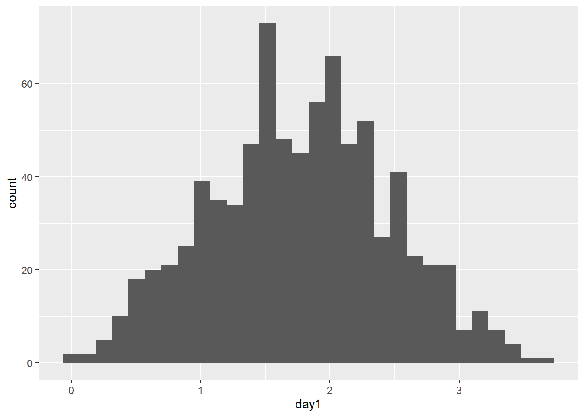
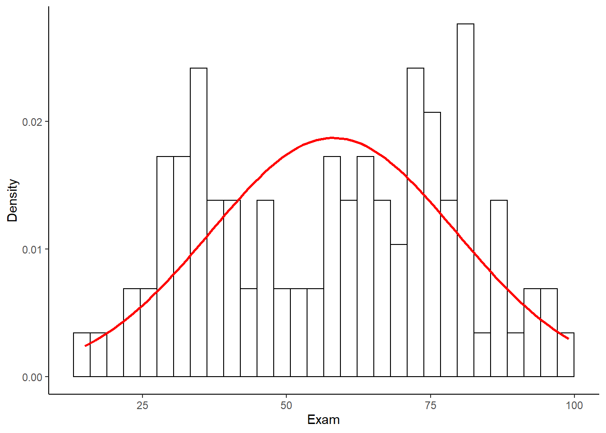

Capítulo 8 ANOVA (comparar 3 grupos o más)
En este capítulo vamos a revisar el típico análisis para comparar más de dos grupos, el ANOVA.
8.1 ¿Por qué necesitamos un ANOVA?
Revisa este video (9') y trata de responder:
- ¿Cómo comparamos varias condiciones experimentales?
- ¿Cuántos distintos tipos de ANOVA existen?
- ¿De qué dependen del tipo de ANOVA que usemos para realizar un análisis?
- ¿Qué es un factor en un ANOVA?
- ¿Qué es un nivel en un ANOVA?
- ¿Qué es un ANOVA mixto?
- ¿En un experimento hipotético con 3 condiciones experimentales por qué no podemos usar 3 t-test?
- ¿Cuanto aumenta el error de tipo 1 cuando aumentamos el número de comparaciones que hacemos?
- ¿Qué es una prueba omnibus?
- ¿Cuáles son los supuestos del ANOVA?
8.2 El ANOVA como un modelo líneal general
Revisa este video (18') y trata de responder:
- ¿Qué nos dice el valor F en un ANOVA?
- ¿Por qué el ANOVA se puede representar como una regresión?
- ¿Cómo se refleja un t-test en un modelo lineal general (GLM)?
- ¿Para que nos sirven las variables ficticias (dummy coding) en el ANOVA?
- ¿Qué refleja el intercepto de la ecuación que representa el ANOVA?
- ¿Qué reflejan los coeficientes (o betas) de la ecuación que representa el ANOVA?
8.3 La lógica del ANOVA
Revisa este video (15') y trata de responder:
- ¿Qué reflejan los coeficientes (o betas) de la ecuación que representa el ANOVA?
- ¿Cómo serían los promedios de los grupos si la hipótesis nula se tuviera que aceptar?
- ¿Qué es la suma de cuadrados (SS) total?
- ¿Qué es la suma de cuadrados (SS) del modelo?
- ¿Qué es la suma de cuadrados (SS) de los residuales?
8.4 El ANOVA con R
Ahora vamos a hacer el análisis. Primero seteamos nuestro directorio de trabajo y cargamos las librerías que necesitemos (si no las tienes instaladas debes instalarlas).
setwd("C:/Users/Usuario/Documents/JoseLuis/UTalca_2018/Estadistica_Bookdown/estadistica")
library(ggplot2)
library(Hmisc)
library(Rmisc)
library(effsize)
library(pastecs)
library(reshape2)
library(car)
library(effsize)Luego importamos el set de datos. Aprovechamos de agregar unas etiquetas que nos sirvan a visualizar las condiciones experimentales. Y le damos una mirada.
dat1 <- read.csv("data/inteligencia.csv", header = TRUE)
dat1$Dosis <- factor(dat1$Dosis,
levels = c(1:3), labels = c("Placebo", "Baja", "Alta"))
dat1## Dosis Inteligencia
## 1 Placebo 3
## 2 Placebo 2
## 3 Placebo 1
## 4 Placebo 1
## 5 Placebo 4
## 6 Baja 5
## 7 Baja 2
## 8 Baja 4
## 9 Baja 2
## 10 Baja 3
## 11 Alta 7
## 12 Alta 4
## 13 Alta 5
## 14 Alta 3
## 15 Alta 6Luego, mirar los datos siempre es bueno graficar.
# Podemos usar esta función para calcular los estadísticos a través de los participantes.
datac <- summarySE(dat1,
measurevar="Inteligencia",
groupvars="Dosis")
# Luego hacemos el gráfico
ggplot(datac, aes(x=Dosis, y=Inteligencia, group=1)) +
geom_errorbar(width=.1, aes(ymin=Inteligencia-se, ymax=Inteligencia+se)) +
geom_line(colour = "Red", linetype = "dashed") +
geom_point() +
ylab("Niveles de inteligencia") +
theme(panel.grid.major = element_blank(), panel.grid.minor = element_blank(),
panel.background = element_blank(), axis.line = element_line(colour = "black"))
Luego podemos hacer una descripción de los datos.
test <- by(dat1$Inteligencia,
dat1$Dosis,
stat.desc, basic = FALSE,
norm = TRUE)
lapply(test,round,2)## $Placebo
## median mean SE.mean CI.mean.0.95 var std.dev coef.var skewness skew.2SE
## 2.00 2.20 0.58 1.62 1.70 1.30 0.59 0.26 0.14
## kurtosis kurt.2SE normtest.W normtest.p
## -1.96 -0.49 0.90 0.42
##
## $Baja
## median mean SE.mean CI.mean.0.95 var std.dev coef.var skewness skew.2SE
## 3.00 3.20 0.58 1.62 1.70 1.30 0.41 0.26 0.14
## kurtosis kurt.2SE normtest.W normtest.p
## -1.96 -0.49 0.90 0.42
##
## $Alta
## median mean SE.mean CI.mean.0.95 var std.dev coef.var skewness skew.2SE
## 5.00 5.00 0.71 1.96 2.50 1.58 0.32 0.00 0.00
## kurtosis kurt.2SE normtest.W normtest.p
## -1.91 -0.48 0.99 0.97La función by permite calcular los estadísticos. La función round redondea los valores a dos décimas. Y la función lapply permite aplicar la función round de forma másiva.
Antes de hacer el ANOVA verificamos si existen problemas de homgeneidad de varianza. Podemos hacerlo con la función leveneTest
leveneTest(dat1$Inteligencia, dat1$Dosis, center = mean)## Levene's Test for Homogeneity of Variance (center = mean)
## Df F value Pr(>F)
## group 2 0.0917 0.913
## 12Si la prueba de Levene es significativa entonces las varianzas son diferentes entre los grupos. En ese caso podemos aplicar la F de Welch a los datos. Esta prueba hace ajustes por las diferencias que hay entre las varianzas de cada grupo.
AOV_W <- oneway.test(Inteligencia ~ Dosis, data = dat1)
AOV_W##
## One-way analysis of means (not assuming equal variances)
##
## data: Inteligencia and Dosis
## F = 4.3205, num df = 2.0000, denom df = 7.9434, p-value = 0.05374En nuestro caso no tuvimos problema en relación a la homgeneidad de varianza. Podemos hacer entonces el análisis estadístico, aplicando la función aov. Enseguida aplicamos la función sumary para visualizar los resultados del test.
m_AOV <- aov(Inteligencia ~ Dosis, data = dat1)
summary(m_AOV)## Df Sum Sq Mean Sq F value Pr(>F)
## Dosis 2 20.13 10.067 5.119 0.0247 *
## Residuals 12 23.60 1.967
## ---
## Signif. codes: 0 '***' 0.001 '**' 0.01 '*' 0.05 '.' 0.1 ' ' 1Pr(>F) indica la probabilidad de que ocurra un F-ratio del tamaño del obtenido si no hubiera efecto en la población.
En esta punto sabemos que existe un efecto en alguna parte. El ANOVA es un test omnibus. Pero todavía no sabemos exactamente dónde esta el efecto. Es decir, entre qué grupos hay diferencias.
Vamos a volver sobre las ideas comentadas en los videos anteriores. ¿Te acuerdas que reflejan el intercepto y la pendiente (o beta) de una ecuación que represente el ANOVA?
Vamos a usar el dummy coding para desarrollar esta idea. Primero carguemos uno base de datos idéntica a la anterior pero con una columna extra con el dumming coding.
dat2 <- read.csv("data/inteligencia_c_Variables.csv", header = TRUE)
dat2$Dosis <- factor(dat2$Dosis, levels = c(1:3),
labels = c("Placebo", "Baja", "Alta"))
dat2## Dosis Inteligencia Baja Alta
## 1 Placebo 3 0 0
## 2 Placebo 2 0 0
## 3 Placebo 1 0 0
## 4 Placebo 1 0 0
## 5 Placebo 4 0 0
## 6 Baja 5 1 0
## 7 Baja 2 1 0
## 8 Baja 4 1 0
## 9 Baja 2 1 0
## 10 Baja 3 1 0
## 11 Alta 7 0 1
## 12 Alta 4 0 1
## 13 Alta 5 0 1
## 14 Alta 3 0 1
## 15 Alta 6 0 1Vamos a hacer un modelo lineal dónde tratemos de predecir los niveles de inteligencia en base a nuestro dummy coding (que en el fondo refleja los efectos que resultan de comparar los grupos experimentales con un grupo base).
m_dummy1 <- lm(Inteligencia ~ Baja + Alta, data = dat2)
summary(m_dummy1)##
## Call:
## lm(formula = Inteligencia ~ Baja + Alta, data = dat2)
##
## Residuals:
## Min 1Q Median 3Q Max
## -2.0 -1.2 -0.2 0.9 2.0
##
## Coefficients:
## Estimate Std. Error t value Pr(>|t|)
## (Intercept) 2.2000 0.6272 3.508 0.00432 **
## Baja 1.0000 0.8869 1.127 0.28158
## Alta 2.8000 0.8869 3.157 0.00827 **
## ---
## Signif. codes: 0 '***' 0.001 '**' 0.01 '*' 0.05 '.' 0.1 ' ' 1
##
## Residual standard error: 1.402 on 12 degrees of freedom
## Multiple R-squared: 0.4604, Adjusted R-squared: 0.3704
## F-statistic: 5.119 on 2 and 12 DF, p-value: 0.02469Al mismo tiempo aprovechemos de calcular los promedios para los valores de inteligencia de acuerdo a cada grupo experimental
aggregate(dat2$Inteligencia, list(dat2$Dosis), mean)## Group.1 x
## 1 Placebo 2.2
## 2 Baja 3.2
## 3 Alta 5.0Fíjate que:
El intercepto del modelo (el "Estimate" de la fila "Intercept") corresponde al promedio en los niveles de inteligencia para el grupo placebo.
El beta 1 del modelo (el "Estimate" de la fila "Baja") corresponde a la diferencia en los niveles de inteligencia entre el grupo con dosis baja y el grupo placebo.
El beta 2 del modelo (el "Estimate" de la fila "Alta") corresponde a la diferencia en los niveles de inteligencia entre el grupo con dosis alta y el grupo placebo.
Tal como lo habíamos concebido anteriormente! ¿Necesitamos definir un dummy coding para hacer esto? En realidad R lo hace por defecto.
Si hacemos un modelo para predecir los niveles de inteligencia directamente de la columna que indica las dosis obtenemos exactamente el mismo modelo.
m_dummy2 <- lm(Inteligencia ~ Dosis, data = dat2)
summary(m_dummy2)##
## Call:
## lm(formula = Inteligencia ~ Dosis, data = dat2)
##
## Residuals:
## Min 1Q Median 3Q Max
## -2.0 -1.2 -0.2 0.9 2.0
##
## Coefficients:
## Estimate Std. Error t value Pr(>|t|)
## (Intercept) 2.2000 0.6272 3.508 0.00432 **
## DosisBaja 1.0000 0.8869 1.127 0.28158
## DosisAlta 2.8000 0.8869 3.157 0.00827 **
## ---
## Signif. codes: 0 '***' 0.001 '**' 0.01 '*' 0.05 '.' 0.1 ' ' 1
##
## Residual standard error: 1.402 on 12 degrees of freedom
## Multiple R-squared: 0.4604, Adjusted R-squared: 0.3704
## F-statistic: 5.119 on 2 and 12 DF, p-value: 0.02469Por úlitmo, fíjate que cuando usamos la función aov para hacer el ANOVA obtuvimos una versión resumida de lo que obtenemos al realizar el modelo lineal con la función lm. En el fondo esto refleja que una ANOVA es un modelo lineal que esta disfrazado. Esto es lo que se llama una función wraper. De hecho podemos ver el modelo completo si al resultado del aov le aplicamos la función summary.lm.
summary.lm(m_AOV)##
## Call:
## aov(formula = Inteligencia ~ Dosis, data = dat1)
##
## Residuals:
## Min 1Q Median 3Q Max
## -2.0 -1.2 -0.2 0.9 2.0
##
## Coefficients:
## Estimate Std. Error t value Pr(>|t|)
## (Intercept) 2.2000 0.6272 3.508 0.00432 **
## DosisBaja 1.0000 0.8869 1.127 0.28158
## DosisAlta 2.8000 0.8869 3.157 0.00827 **
## ---
## Signif. codes: 0 '***' 0.001 '**' 0.01 '*' 0.05 '.' 0.1 ' ' 1
##
## Residual standard error: 1.402 on 12 degrees of freedom
## Multiple R-squared: 0.4604, Adjusted R-squared: 0.3704
## F-statistic: 5.119 on 2 and 12 DF, p-value: 0.02469Por último, podemos hacer algunos gráficos que podemos extraer del modelo de ANOVA.
plot(m_AOV)
Los dos primeros gráficos son los mas importantes. El gráfico 1 muestra la homogeneidad de varianza. Si ves una forma de embudo entonces hay en problemas en la homgeneidad de varianza. La idea es que los puntos estén igualmente repartidos. Es decir, las variaciones son similares entre los grupos. El gráfico 2 es un gráfico Q-Q. Si los puntos están sobre la diagonal entonces se cumple el suspuesto de la normalidad de los datos.